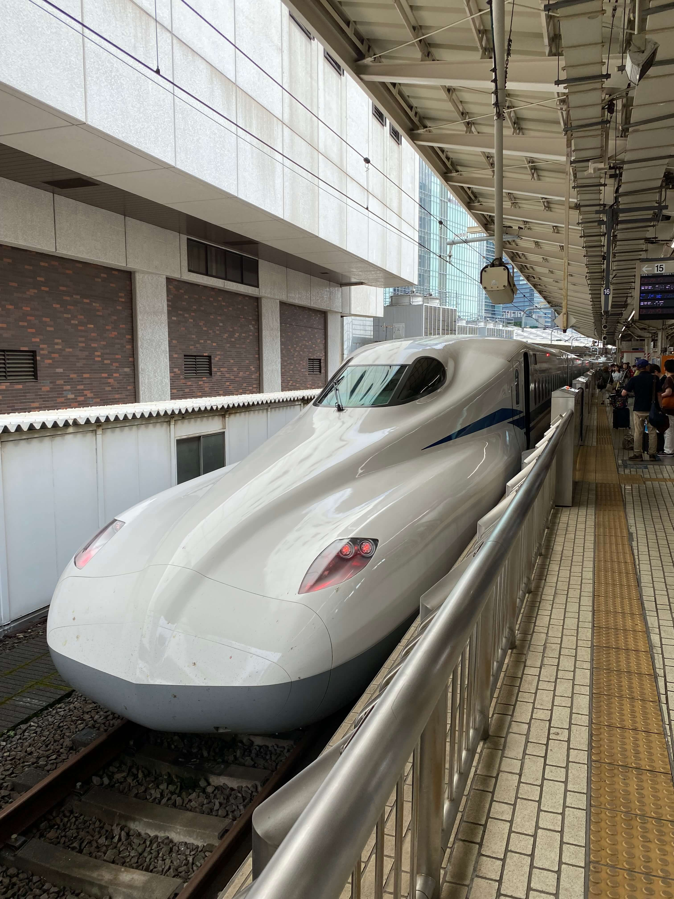
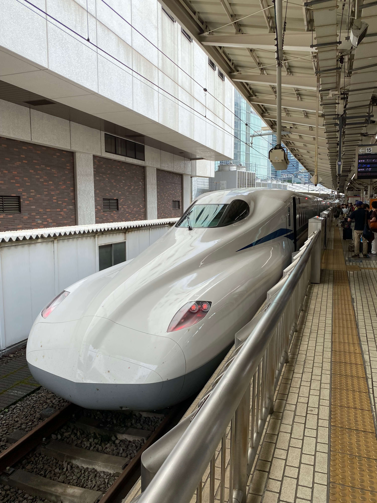

Na 17 uur vliegen en een tussenstop in Dubai kwamen we kotsmisselijk en in het donker aan in Tokyo Haneda! Vanaf het vliegveld moesten we een half uurtje lopen om bij ons eerste hotel te komen, dit was al een bijzondere wandeling omdat in het donker liepen we langs de snelweg en dit gaf al heel snel een heel vrij gevoel raar genoeg. Alles was al zo anders en onbekend voor ons.
Toen we eenmaal aankwamen hebben we een klein rondje in de wijk gemaakt. Hier hebben wij ook onze eerste vending machine drankjes gekocht!. Kort hierna zijn we gaan slapen om de volgende dag door te gaan naar het volgende hotel in akihabara. Onderweg naar akihabara zijn we langs Shibuya gegaan en hier rondgedwaald bij de Shibuya crossing.
Akihabara is echt fantastisch als je van games, films, comics, of anime houd. Overal zijn winkels en soms hebben deze wel 9 verdiepingen. Hier hebben wij de meeste tijd in Tokyo doorgebracht gezien er zo veel te doen was.
De laatste nacht in Tokyo hebben we in een sleeping pod hotel geslapen. Hier slaap je in een gezamenlijke ruimte met allemaal slaap hokjes. In foto’s ziet dit er altijd cozy uit maar het was minder bijzonder dan we verwacht hadden. Hierna zijn we met de Shinkansen (bullettrain) naar Nakatsugawa geschoten.
 
